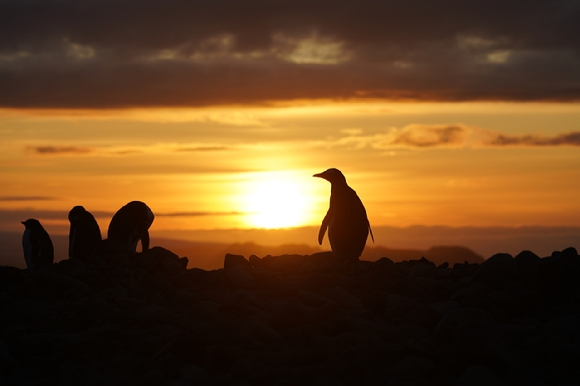

극지연구소(소장 강성호)가 13회 극지사진콘테스트 21일 수상작을 공개했다. 우리나라 쇄빙선
아라온호Ararion를 타고 남극①과 북극②을 오가는 극연 연구원들이 찍은 사진들이다.
남극과 북극은 현재 지구 가열화로 가장 변화가 심한 곳으로 꼽힌다.
이대로 지구 가열화가 진행되면 북극은 얼음이 없는 상황에까지 이를 수 있다는 위기감 마저 감돈다. ‘찬란한 슬픔’의 시간을 맞고 있다.
수상작은 총 14작품이다.
대상 수상작은 북극해 바다얼음에 모여 있는 북극곰 가족을 촬영한 ‘지구를 살려주세요!’ (주형민
극지연구소 차세대 쇄빙연구선 건조사업단장 촬영)가 차지했다.
줄어드는 얼음 위에 북극곰 가족이 모여 있는 위태로운 모습을 담았다. 북극곰은 개체 수가 계속
줄어들면서 지구 가열화가 가속화하면 끝내 북극에서 생존할 수 없는 상황에 처할 수 있다는 경고음까지
나오고 있다.
만약 배고픈 북극곰이 민가로 내려와 우리집 쓰레기통을 뒤지고 있을때 만난다면...윽! 상상도 하기
싫어!!!

세종과학기지에서 일몰과 함께 젠투펭귄이 카메라에 포착됐다. [사진=극지연구소 최동건]
남극의 상징인 귀여운펭귄도 북극곰 운명과 크게 다르지 않다. 지구 가열화로 먹이 활동이
여의치 않으면서 황제펭귄 등 개체수가 감소하고 있다는 연구결과가 계속 보고되고 있다.
수상작에는 이외에도 남극에서 고래와 펭귄이 마주치는 장면, 남극의 젠투와 황제펭귄의 아름다운 모습도
담겼다. 하늘에서 본 세종과학기지와 먼 거리에서 본 남극의 산, 연구원들의 현장 사진도 눈길을 끈다.
수상자가 말했다.이런 사진이 찍힐줄은 꿈에도 몰랐어요! 우연히 찍혔는데 상까지 받았어요!
장보고과학기지에서 남극점까지 길을 뚫고 있는 ‘K-루트 탐사대’의 활동 상황도 카메라에 잡혔다.
장보고과학기지 소개
세종 과학기지에 이어 대한민국이 남극에 두 번째로 건설한 과학 기지이자, 최초로 남극 대륙에 세워진
기지이다. 통일 신라 시대의 장수인 해상왕 장보고의 이름을 따 명명되었다. 남극 북빅토리아 랜드의
테라노바 만 연안에 있으며 2005년부터 계획이 시작되어 후보지 답사와 정밀조사 끝에 2010년 건설지가
확정되었고, 실제 공사는 2012년부터 2014년까지 진행하였다. 장보고 과학기지가 건설됨으로써
대한민국은 세계에서 10번째로 남극에 2개 이상의 상주 기지를 운영하는 국가가 되었다.
한편 우리나라는 남극에 세종과학기지와 장보고과학기지를 운영하고 있다. 북극에는 노르웨이에
다산과학기지가 있다.
① 남극은 지구의 최남단의 대륙으로, 한가운데 남극점이 있다. 남극 대륙은 거의 대부분 남극권 이남에
자리 잡고 있으며, 주변에는 남극지구와 남극해가 있다. 면적은 약 1,400만 km²로서 아시아, 아메리카,
아프리카에 이어 세계에서 4번째로 큰 대륙이다.
② 북극은 지구 북극점 근처의 지역이다. 북극점을 '북극'으로 부르기도 한다. 북극은 북극해뿐만 아니라
러시아, 시베리아, 알래스카, 캐나다, 그린란드, 아이슬란드, 스칸디나비아를 포함한다. 남극과 마찬가지로
북극에도 대한민국을 포함한 여러 나라가 연구 기지를 설치하였다.


세종 과학기지에 이어 대한민국이 남극에 두 번째로 건설한 과학 기지이자, 최초로 남극 대륙에 세워진 기지이다. 통일 신라 시대의 장수인 해상왕 장보고의 이름을 따 명명되었다. 남극 북빅토리아 랜드의 테라노바 만 연안에 있으며 2005년부터 계획이 시작되어 후보지 답사와 정밀조사 끝에 2010년 건설지가 확정되었고, 실제 공사는 2012년부터 2014년까지 진행하였다. 장보고 과학기지가 건설됨으로써 대한민국은 세계에서 10번째로 남극에 2개 이상의 상주 기지를 운영하는 국가가 되었다.